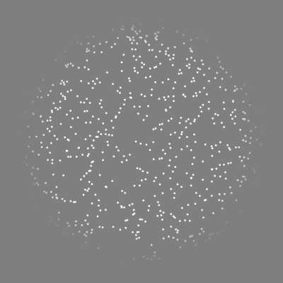
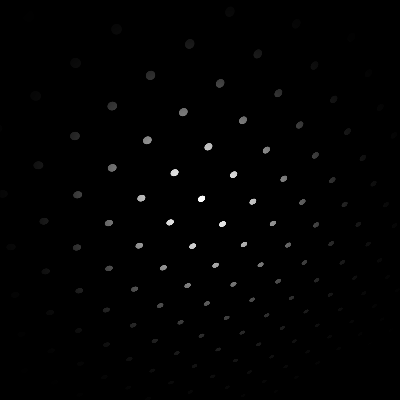

Standard stimulus library¶
Here is a number of stimuli deposited to mPsy standard library so far.
Luminance grating¶

A periodic modulation of luminance. The modulation is characterized by spatial and temporal frequencies. The stimulus is complete with a mask that can take the form of smooth (Gaussian) or sharp aperture. The grating can be tilted and slanted.
Random-dot cinematogram (RDC)¶
{kind=link}
An array of randomly positioned dots. A common instantiation of RDC contains two groups of dots, “signal” and “noise,” whose properties determine stimulus “coherence.” The instance on the right contains only one group. One may overlay several such stimuli (using different parameters for each) to control coherence or create more complex versions of RDC.
Dot lattice¶
{kind=link}
A periodic array of dots organized along several orientations with a constant inter-dot distance within orientation. The “dots” can be solid disks or Gaussian blobs, or they can have more complex shapes, such as luminance gratings characterized by the same of different spatial frequencies and orientations.
Cube¶

Cube rotated and scaled in three dimensions. The colors of vertices and faces are controlled independent of one another.
{kind=link}
{kind=link}